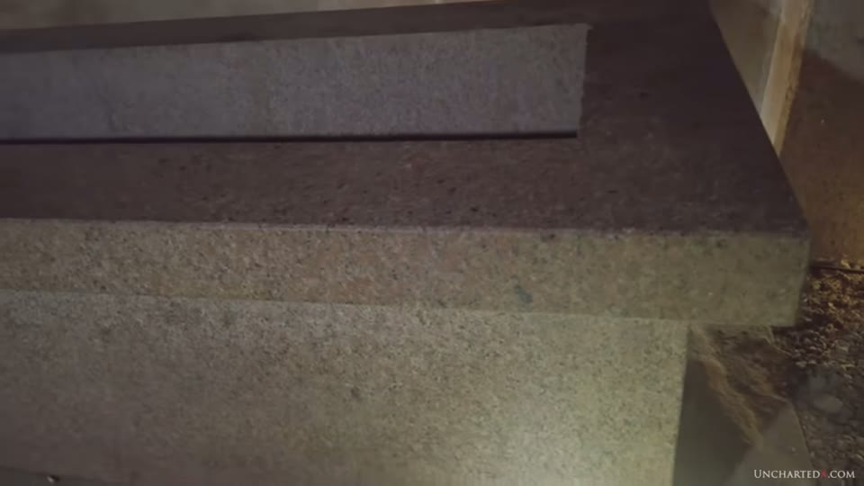
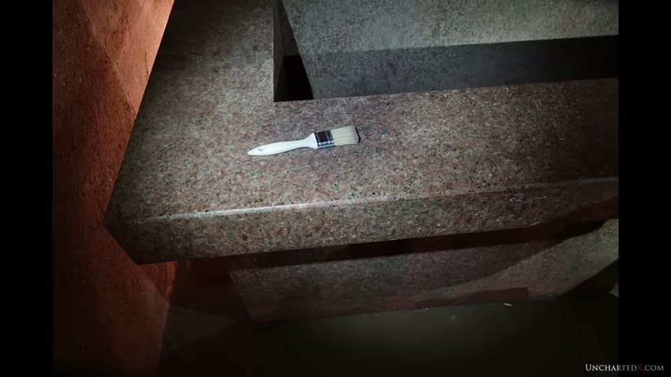
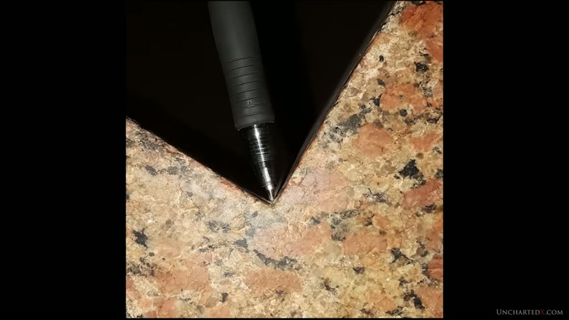
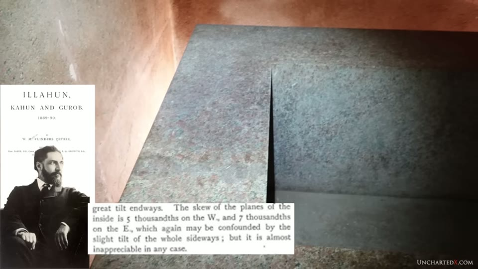
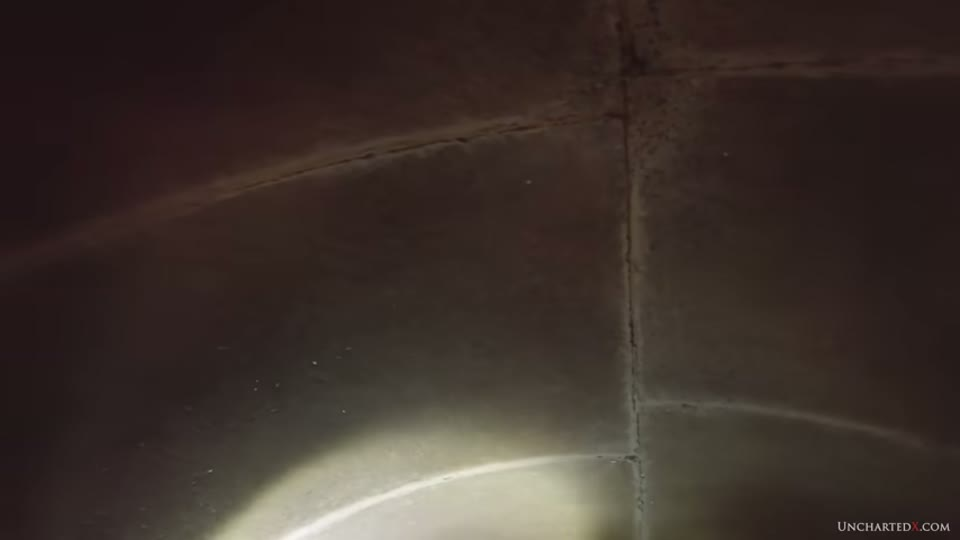
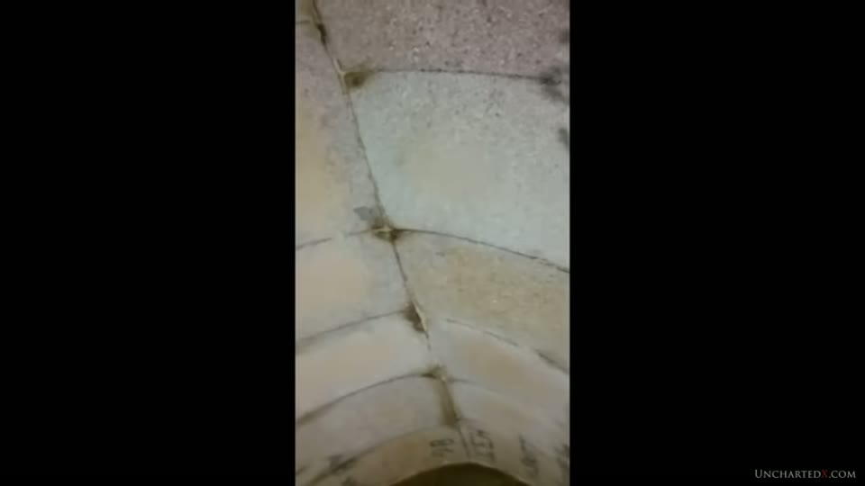
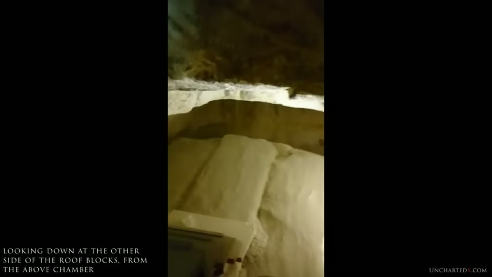
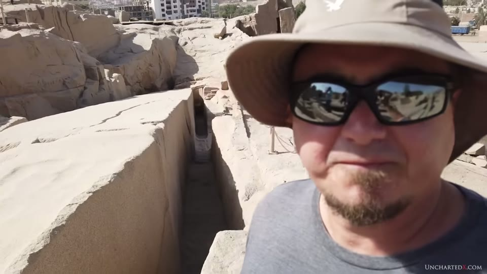
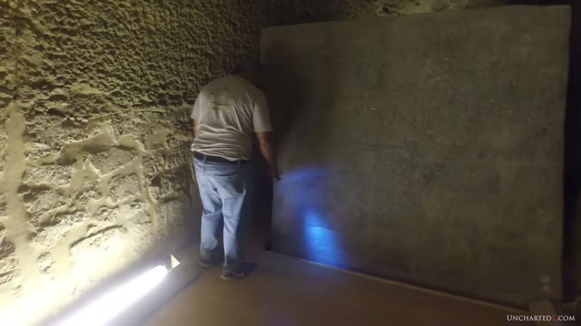
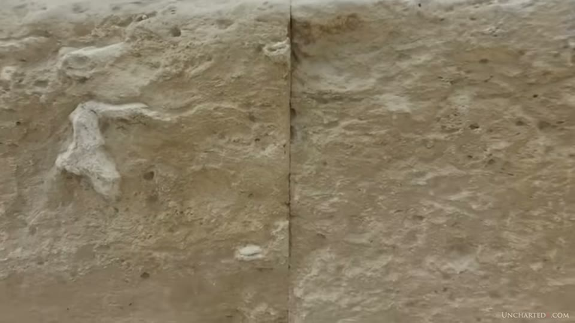

UnchartedX
The MOST precisely made granite object of Ancient Egypt - and why it's NOT geopolymer!
Ben · 35 min · watch on YouTube · summarised 2026-10-01
Two videos in one. The first half is a visit to a chamber beneath the mudbrick pyramid at Lahun and a reading of Flinders Petrie's published measurements of the granite box in it. The second half 21:45–32:15 is a set of reasons for rejecting the proposal that Egypt's hard-stone work is cast rather than carved — a question Ben had promised to address and had twice deferred. At the end of the granite cave entry he says on camera he will "definitely look into things like geopolymers", and the Puma Punku entry three weeks later lists a geopolymer chapter among the episodes to come and declines to take a position. This is where he takes one, eighteen months on, and he is explicit that it applies to Egypt and not everywhere.
The site
Lahun — also Illahun or Kahun — sits south of the Giza–Saqqara–Dahshur–Meidum pyramid belt, at the opening of the Fayum 00:40–01:10. The visible structure is a mudbrick pyramid attributed to Senusret II of the 12th Dynasty, about 1890 BCE, once cased in white limestone that Ben says was taken off by Ramesses II for his own projects 01:51–02:48.
The underground chambers were found by Flinders Petrie, who worked the region in 1888–1890 and returned around 1914 03:43–03:56. The section visited was only opened to the public in 2019 04:01–04:11. Petrie's own plan of the tunnels is shown on screen, from Illahun, Kahun and Gurob, which the narration dates to 1891 05:35–05:41.
The detail Ben draws out of that plan is an inference Petrie made from a measurement 06:06–06:44. Having measured the box, Petrie concluded it was too large to have come down the shaft he had entered by, and so marked a second, unexcavated shaft on his map with a question mark. He never dug it. It is the shaft visitors use today.
The plate is legible on screen and carries three things the narration does not mention. It is headed "1:300 PASSAGES IN PYRAMID OF ILLAHUN" and numbered plate II; the conjectural shaft is labelled "Builders main shaft ?" and the one Petrie used "Shaft now used"; and in its top right corner sits a small separate elevation captioned "End view of Sarcophagus", drawn at 1:50 — the lip the video calls unique, published as a measured drawing. The title page shown beside it reads "ILLAHUN, KAHUN AND GUROB. 1889–90", those being the seasons rather than the publication year, and names chapters by five other contributors — Sayce, Hicks, Mahaffy, Griffith and Spurrell — beneath Petrie's own.

The published plan, and the shaft Petrie inferred but never dug.
Halfway down that shaft is a small room with alcoves, cased in fine white limestone, whose purpose Ben says he does not know 04:26–04:41. A tunnel loops entirely around the central chamber and rejoins it beside the box; he reports that some people connect it to the number five and to Osiris, and says "there doesn't seem to be any purpose to this… I really have no idea what it could be" 11:04–11:28.
The box
The chamber is granite throughout, with an arched granite ceiling, and sits roughly 30 feet into the bedrock beneath the pyramid 09:08–09:26. Petrie found the box empty, with no lid and no inscription anywhere 11:53–12:00.
Four features are set out 12:03–15:37:
- It leans. The exterior height changes by about four inches along its length, while the interior cavity is cut square to a top Ben describes as flat, and the floor of the room is level. He says the slope has to have been deliberate, raises three possibilities — the box was moved within the room, something beneath it originally levelled it, or the lean served a function — and settles on none of them.
- It has a wide lip around the top, which he says no other Egyptian precision box has, and which adds corners and geometry to a single-piece carving.
- The internal corner radius is, he says, about the width of the tip of a ballpoint pen, and consistent as far as he can tell — including on the corners under the outside of the lip. He calls this "an order of magnitude finer work than even the incredible boxes of the serapium", held as the Serapeum entry.
- The surfaces are not polished. His phrasing is that they are "just so finely ground as to be basically perfectly flat" — and the same beveling that runs around the lip also appears on the edges of the granite blocks of the room itself.

The object the first half of the video is about, with its lean and its lip.


The feature the video says no other Egyptian precision box has.

The comparison the corner-radius claim is made with.
The argument he builds on it is about irreversibility rather than finish 14:36–15:15: the box is one piece of granite, a single error changes the dimensions of the whole artefact, and nothing can be corrected by taking more material away. His stated test for anyone who disagrees is replication — the internal corner radius and the flatness together, by the claimed method — and "as far as I know no one has ever even come close to this". The same demand, formalised into four steps from Christopher Dunn, is the structural content of the logistics entry.
Petrie's figures, read out in full
16:28–19:04. The quotation is the evidential core of the first half, and it is Petrie's own report rather than any measurement taken on camera:
"The sarcophagus is perhaps the finest piece of mechanical work ever executed in such a hard and difficult material… along the top length of 106 inches the errors from a straight line are an average of seven thousandths of an inch. Of error on the ends, both 50 inches long, the errors are an average of four thousandths of an inch. The errors of parallelism are also very small: the north end is 50.053 and south end 50.073, or a 50th of an inch of difference on a 106 inches length. The curvature of the planes is almost nothing: over the length of 82 inches the east side hollowing 5 and the west side bulging 2 thousandths — a difference which is probably covered by the errors of measurement."
The book page itself is on screen throughout the reading, and it carries more than is read out. Where the narration gives averages, the printed text gives the individual readings behind them. For the 106-inch top length the page lists "− 7, + 5, + 17, − 7, − 7 thousandths on E. side; and + 7, 0, − 13, − 3, + 7 on W., or an average of 7 thousandths of an inch of error". For the 50-inch ends it lists "− 1, − 3, − 1, + 5, 0; and − 6, + 8, + 5, − 7, average error 4 thousandths of an inch". Nine and ten readings respectively, a largest single departure of 17 thousandths, and signs in both directions — none of which is spoken.



The page being read from, and what is printed on it besides what is read.
Three further fragments are visible on the page and are not read. Immediately before the flatness figures a sentence begins "I carefully measured" and ends "…read to a thousandth of an inch", which is Petrie on his own method; the words between fall on a part of the page the overlay never shows. After the parallelism figures the page continues "The E. side…" and resumes "…100th of an inch slant". And after the sideways-tilt caveat it reads "The ends cannot be…" and resumes "…great tilt endways" — Petrie saying which of his measurements he could not take. The reading skips from "106 inches length" straight to "The curvature of the planes", and from "tilt of the sarcophagus sideways" straight to "The skew of the planes".
A fourth skipped passage is about proportion. The page runs "Taking the mean dimen—" and resumes "…inch on the cubit length": Petrie's own reduction of the box to cubits, on screen for several seconds and not mentioned.
Petrie's own account of the lean is in the same passage: the inside depth is equal all over, the outside depth slopes down nearly four inches end to end, "in short the whole thing is tilted by standing on a sloping bottom". And his last paragraph is about what he could not do — he writes that it would be desirable to level the sarcophagus and measure it again, "for doubtless some errors have come in the course of measuring it in its present slanting position".
Ben's use of that sentence is the sharpest move in the first half 19:04–19:38. Petrie saying the difference is "probably covered by the errors of measurement" is, he argues, Petrie admitting his instruments could not resolve the object's error: "we did not have the technology available to accurately measure it in the 19th century, only 120 to 150 years ago. Copper chisels and pounding stones indeed."
What he says should be done instead 15:58–16:14 is a laser-based 3D scan and a surface roughness meter accurate to microns, and that this "is just not a priority for modern egyptology". He began doing exactly that to a different class of object two years later; the project is held as the vases entry. No instrument is used on the Lahun box anywhere in this video. The precision argument from the same period, made with Dunn's published figures rather than with measurement, is the precision entry.
Two things he raises and leaves open
The alignment 19:39–20:21. Box and chamber are both, he says, well aligned to the cardinal points, more than 25 feet down in the bedrock where the stars cannot be seen. "I'm not sure what technique we can attribute to the supposedly primitive ancient Egyptians in order to accomplish this feat. Maybe it was just luck." He asks for ideas in the comments. No measurement of the alignment is given, and no source for it is named.
The arched ceiling 20:37–21:45. He sets it as a question to the viewer and answers it: the other Egyptian chamber he knows with a similar arched ceiling is inside the pyramid of Menkaure at Giza, attributed to the 4th Dynasty, and he says Petrie noted the similarity himself. Both chambers are cut into bedrock and then lined; Menkaure's once held a precision granite box which is no longer there. He states his own view that both could be significantly older than either attribution.
The Menkaure footage carries an editor's caption the narration does not speak: "looking down at the other side of the roof blocks, from the above chamber". There is a chamber over the vault, and the shot is taken from inside it. Dark markings are also visible on the lower blocks of that vault, too small to resolve at this resolution and not referred to.



The two arched ceilings the video puts side by side.
Dating: what the attribution rests on
08:15–09:03 and again 32:56–33:27. Petrie found part of a limestone stele naming Senusret II in the chambers, and Ben says that was the primary factor linking the site to the Middle Kingdom. Against it he puts two things. Tombs and burials near the pyramid were dated in 2010 to the 1st and 2nd Dynasties — his wording is "legitimately dated" — which he says throws the Middle Kingdom relation of the whole site into question. And there is no inscription on the granite at all, not on the chamber and not on the box, which was found empty.
His conclusion is framed as inheritance rather than construction 32:18–33:54: advanced work below ground with low-technology work built on top of it, a mudbrick pyramid over a granite chamber, and the question of whether the two can be assumed contemporary. "If I had found this place as an Egyptian king and I found it to be profound, I might have claimed it and used it for my purposes. It's just human nature after all."
Why he rejects the geopolymer proposal
21:45–32:15. He frames this as a response to viewer comments — more than a hundred, he says, after a long documentary on the subject that he does not name 22:00–22:20. His position is stated before the reasons and is not a denial:
"I don't think that's the case. I'm not saying it's impossible. In fact I think the geopolymer theory does have some merit and some promise, particularly in South America — sites like Tiwanaku in particular, I know there's been some studies done there — but I really am still quite skeptical about it."
He asks that the theory be held to the same standard he sets elsewhere: that it "has to overcome all the aspects of the problem", and says he hopes for more experiment and would be happy to be proven wrong. The exemption he grants to Tiwanaku is the site he had deferred the question to in the Puma Punku entry, where he argues that the answer would not reduce the difficulty either way. The casting case for South America, with the laboratory analysis he alludes to, is argued on another channel in the casting entry.
Then five reasons:
1. Quarries and unfinished work exist 23:13–24:22. Egypt preserves examples at almost every stage from quarry to finished object, and the granite quarries at Aswan hold stones in the process of being shaped and separated from the bedrock — the unfinished obelisk among them, held as the unfinished obelisk entry, and he notes it is not the only one. "If you were just there to either melt the stone and collect it and somehow reset it, or you were just looking to grind it into a powder, you wouldn't be shaping those stones out of the quarry." The unfinished box in the Serapeum passage carries the same point, along with hammering marks he attributes to a chisel of some kind.


Stone caught mid-process, which the first geopolymer objection rests on.
2. Every block is a different shape and size 25:21–26:23. Applied to the large building projects rather than single objects: at the pyramids and the Valley Temple he says every block differs, casing stones included, so a mould would be needed for each one. With 2.3 million blocks in the Great Pyramid that is 2.3 million moulds — against modern practice, where one mould makes millions of identical bricks.
3. Tool and machining marks are there to be found 26:26–27:24. Both kinds, in his reading: primitive marks he attributes to the dynastic Egyptians, and what he calls advanced tooling marks on the precision granite work he thinks is earlier. The specific examples he names are the large circular saw cuts at Abusir and Abu Rawash, saw overcuts in statues and obelisks, and tubular drill marks — held as the machining entry and the tube drills entry. "If you're casting this or you're making these objects in a mould, why then do you need to cut them with a massive circular saw?" He adds that machining marks are present at Tiwanaku too, which is the site he has just granted the casting idea merit at.
4. It is not how granite works 27:25–28:58. Granite is itself an aggregate: quartz, feldspar, mica, hornblende, in lumps that differ from quarry to quarry. Melting it, he argues, leaves no mechanism for re-forming those individual lumps; grinding it leaves no mechanism for quartz pieces of varying sizes. He points at the mineral veins running through Serapeum boxes as features that require formation in place over long periods, and at a thumb from a colossal statue at Tanis made of conglomerate — flint, quartzite and other materials mixed — as a case harder still. A cartouche is carved into the fragment in the frames used for it, which is not mentioned either way.
The same footage is used again twenty months later with a different site named. In the colossal statues entry the identical shot — same hand, same angle, same palm tree, same scattered blocks — runs while the narration places the statue at Karnak rather than Tanis. Neither video notes the difference, and nothing in the frame settles it.

What granite is made of, at a range where the components show.

A colossal fragment offered as a harder case than granite.
5. The limestone carries fossils 29:17–30:03. The Giza plateau was a seabed; shells and fossils appear in the bedrock and in the blocks of the monuments, which he says is how you know the blocks came off the plateau, and which would not survive grinding to powder or melting. The frame that carries it is a close-up of two dressed blocks with a joint between them and shelly material standing proud of both faces.

Fossil material in dressed blocks — the fifth objection's whole evidence.
This is the one of his five reasons that is answered directly, and at length, in another entry — the material-science entry has a section on exactly this objection, arguing that an aggregate made from local limestone would contain the same fossils, and that the orientation of the shells rather than their presence is the thing to look at. The papers behind that position are named in the mine-waste entry. The same Lahun pyramid appears on that channel too, as the only pyramid with a perimeter trench, in the chemical-plant entry.
And a sixth point, against a specific version 30:04–31:30. The proposal that ancient builders focused sunlight through large quartz lenses to melt stone. He asks how the quartz lens itself was melted, and points at the manufacture of large telescope mirrors — years of cooling and polishing, and only one or two places in the world attempting it — as the scale of the undertaking being assumed. "Someone needs to demonstrate this. Start melting granite and see how far you get."
What you can check yourself
- Petrie's figures are in a published book. Illahun, Kahun and Gurob is out of copyright and online; the passage read out, including the 106-inch and 50-inch errors and the caveat about errors of measurement, can be found and compared with the reading. The individual readings, the sentence about how he measured, the sentence about the ends he could not measure and the cubit reduction are all on the same page, and the video puts that page on screen.
- The second shaft. Petrie's plan, with the question marks over the shaft he never dug, is in the same book. Whether the shaft now used matches where he put it is checkable against the plan.
- The absence of inscription. Photographs of the chamber and the box are the claim's whole evidence, and the claim is a negative one that photographs can test.
- The arched ceilings. Menkaure's chamber and the Lahun chamber are both photographed; whether the ceilings are built the same way is a visual comparison a reader can make, and Petrie's remark on the similarity is in print.
- The Aswan quarry. Partly shaped stones still attached to bedrock are photographable and photographed extensively elsewhere on the channel.
- Conglomerate and veined stone. The Tanis thumb and the veined Serapeum boxes are objects in known places, and the claim about them is about what is visible on the surface.
- The 2010 dating of nearby tombs. Ben gives no reference, but first- and second-Dynasty burials at Lahun would be in the excavation literature.
What the video does not settle
- Nothing is measured on camera. Every figure for the box is Petrie's, from the 1880s. The flatness, the corner radius, the four-inch slope and the cardinal alignment are all either quoted or stated; no instrument appears, and the scan and roughness meter Ben says the object needs are what he is asking for rather than what he has.
- The corner radius has no number. It is given as about the width of a ballpoint pen tip, and its consistency as "as far as I can tell". Petrie's quoted passage does not cover it.
- The claim that no other box has the lip or the lean is stated from his own experience — "as far as I know", "I haven't seen in any other boxes" — and no survey is cited.
- The reading of Petrie's caveat is an interpretation. Petrie wrote that one small difference was probably within his errors of measurement and asked for the box to be levelled and re-measured. That he was thereby unable to resolve the object's precision at all is the conclusion Ben draws from it. The sentence on the same page describing his instrument as reading to a thousandth of an inch is not read out.
- The quoted averages cover a spread the page gives and the narration does not. Seven thousandths is the mean of readings running from 0 to 17; four thousandths is the mean of readings running from 0 to 8. Both sets are printed on screen.
- The five reasons are directed at a version of the theory the video does not source. The documentary prompting the comments is not named, no paper or researcher advancing the casting case is quoted, and the melting-with-lenses idea is attributed only to "so many people". The stronger published versions of the argument — Davidovits on fossil orientation, the Peru laboratory report — are not addressed, and the fossil objection as stated here is the one those versions were written to answer.
- The mould-per-block argument is applied across categories. It is an argument about 2.3 million pyramid blocks; the object the video is otherwise about is a single granite box, for which one mould would be one mould.
- No date is offered for the chamber. The Middle Kingdom attribution is questioned, the 1st and 2nd Dynasty burials are introduced against it, and the possibility raised is that the underground work is "possibly far older than orthodox history would have us believe". No alternative figure is proposed and no dating method is applied to the granite.
- The looping tunnel is unexplained and he says so.
- Why the box tilts is unresolved, and three incompatible possibilities are left standing.